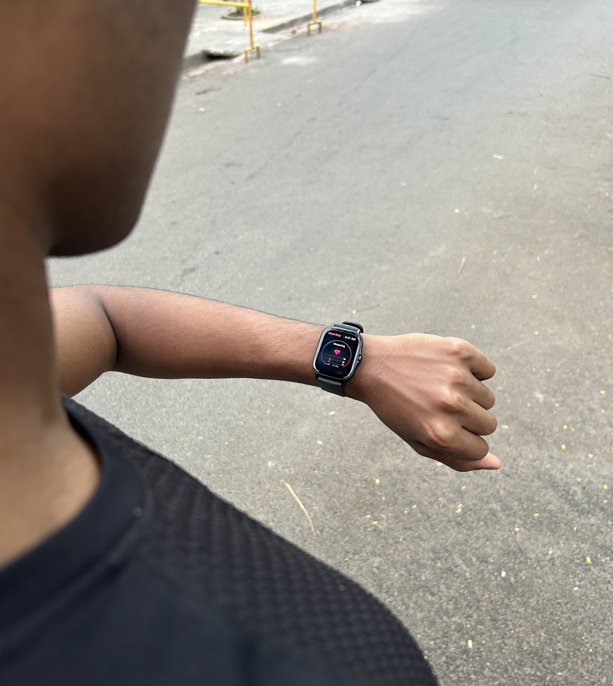

The Running Paradox: How Running Slow Makes You Faster
Picture this: you're lacing up your running shoes, the sun is peering through the clouds, and you're gearing up for your daily run. But wait, today isn't about pushing your limits or chasing personal records. Today is about embracing the slow burn, the gentle rhythm of an easy run. Easy runs. Recovery runs. Steady runs. Whatever you prefer to call them, they're the bread and butter of your training plan. They are the unsung heroes of your training routine, the foundation upon which your speed and endurance are built. But what does easy running really mean? How far or how long should it be? And most importantly at what pace should it be at?
How Easy Should An Easy Run Be?
In very basic terms, it should be completed at a controlled effort and a comfortable pace. Which could also be described as a pace that's comfortable, sustainable, and dare I say, conversational. Yes, imagine being able to chat with your running buddy without gasping for air. In terms of distance, well, there isn’t really any set limit with this. However the primary aspect of an easy run is determined by its relative effort. It should be done at an easy pace that theoretically, you could sustain all day long. I said theoretically because you are not expected to run an ultramarathon. If someone were to ask you to run an extra kilometre or two after your run, you should be able to do so without breaking too much of a sweat.
Why Do Easy Runs Matter?
When scanning through a training plan, I'm sure many of us are drawn to the exciting fast intervals, challenging tempo runs, and the ever-important long run. However, in reality, these high-intensity sessions make up a smaller portion of our overall training volume compared to the easier runs. So, you might wonder about the purpose of these easy runs when all you want is to get faster and improve your times. It's important to remember that they serve a crucial role in helping us recover from those demanding workouts. Easy runs place significantly less stress on our bodies compared to intense sessions, yet they play a vital role in building our aerobic base mileage and enhancing our cardiovascular system. These runs are perfect for recovery after tough workouts, offering a double benefit: they help us bounce back while simultaneously boosting our aerobic capacity. So, while they might not seem as flashy as the hard sessions, easy runs are fundamental for long-term improvement and overall fitness.
I might be making it sound simple, but as many of you know, it's not always a walk in the park. Sometimes, you feel guilty for not pushing harder, and that temptation to speed up creeps in. It takes real discipline to resist that urge and stick to a slower pace. Often, we end up in that grey zone or either running too easy or too hard.
Training Levels And Zones
To aid in your quest for easy run excellence, it's essential to understand training zones and levels. The first step towards figuring these out is knowing our lactate threshold, which is a very simplistic term to the point at which our cairo vascular system switches from working aerobically to anaerobically. Now if you want to find out your own threshold, you need to run all out for 30 minutes. From that, you can calculate what we call our zones. Specifically, now, we’re focusing on our zone one. For the heart rate zone, we can calculate it based on the threshold value provided by that 30-minute effort. It’s known as our lactate threshold heart rate, LTHR. They’re represented as less than 85% of LTHR for zone one. When talking about pace, we refer to these as a functional threshold pace, FTP. These zones would be slower than 129% of FTP (78%). For example if your 30-minute effort provided you with a lactate threshold heart rate of 165 bpm and a corresponding pace of 7:10 minute mile, then you’d aim for the following heart rate and pace values to ensure that you’re keeping your run easy. Heart rate for zone one would be less than 119. From a pace perspective, zone one would be slower than 9:15 minute mile. For those under 20, it's advisable to add an extra 20 bpm to the previously mentioned numbers.
You might assume that with the stats provided, nailing an easy run should be a breeze. But, surprise! It's not that simple. Let's take a peek at stats from a few of my recent runs. (By the way, I'm 19, so my ideal heart rate for zone 1 should be just under 150 or 155 bpm.)